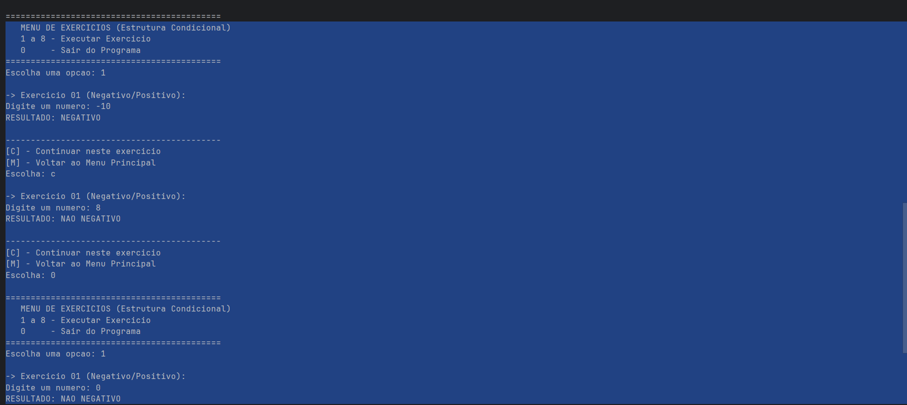
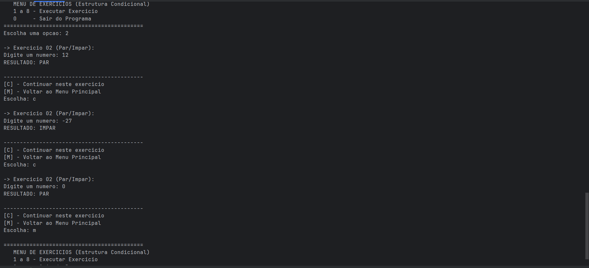
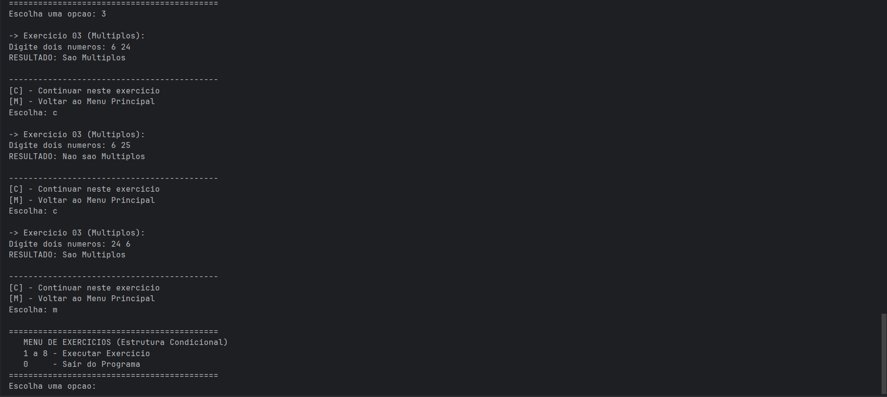
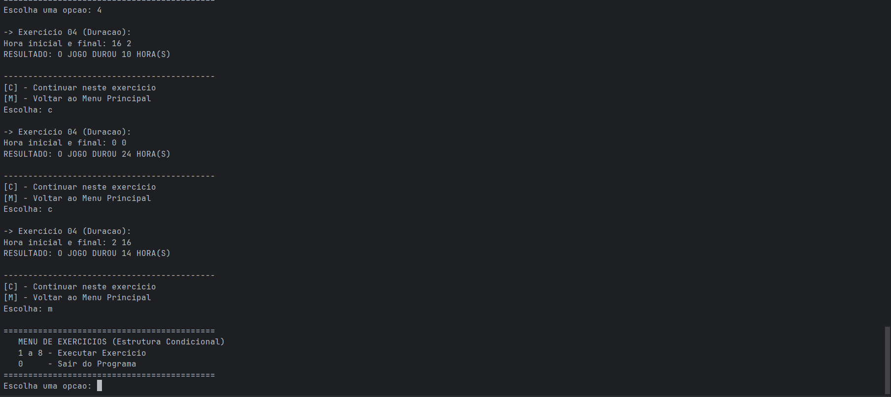
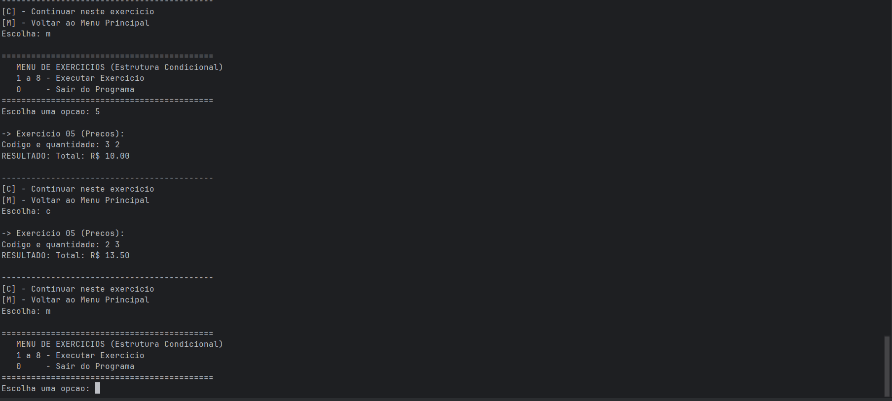
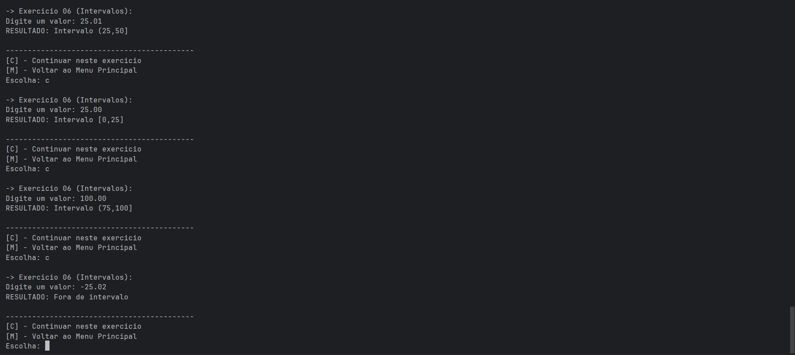
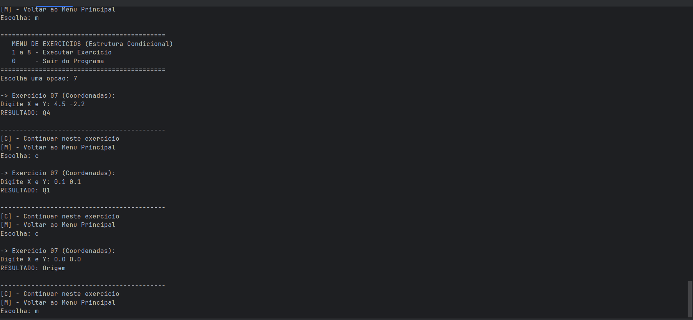
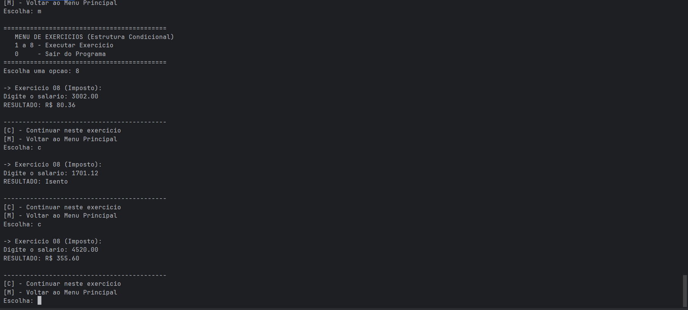

while, permitindo a execução modular de 8 exercícios lógicos.
import java.util.Locale; import java.util.Scanner; public class ListaExerciciosCondicional { public static void main(String[] args) { Locale.setDefault(Locale.US); Scanner sc = new Scanner(System.in); int escolha = -1; while (escolha != 0) { System.out.println("\n==========================================="); System.out.println(" MENU DE EXERCICIOS (Estrutura Condicional)"); System.out.println(" 1 a 8 - Executar Exercicio"); System.out.println(" 0 - Sair do Programa"); System.out.println("==========================================="); System.out.print("Escolha uma opcao: "); escolha = sc.nextInt(); if (escolha == 0) { System.out.println("Programa encerrado. Bons estudos, Adriel!"); break; } switch (escolha) { case 1: exercicio01(sc); break; case 2: exercicio02(sc); break; case 3: exercicio03(sc); break; case 4: exercicio04(sc); break; case 5: exercicio05(sc); break; case 6: exercicio06(sc); break; case 7: exercicio07(sc); break; case 8: exercicio08(sc); break; default: System.out.println("Opcao invalida! Tente de 0 a 8."); } } } }
public static boolean desejaContinuar(Scanner sc) { System.out.println("\n-------------------------------------------"); System.out.println("[C] - Continuar neste exercicio"); System.out.println("[M] - Voltar ao Menu Principal"); System.out.print("Escolha: "); char resp = sc.next().toUpperCase().charAt(0); return resp == 'C'; }
public static void exercicio01(Scanner sc) { do { System.out.println("\n-> Exercicio 01 (Negativo/Positivo):"); System.out.print("Digite um numero: "); int n = sc.nextInt(); if (n < 0) System.out.println("RESULTADO: NEGATIVO"); else System.out.println("RESULTADO: NAO NEGATIVO"); } while (desejaContinuar(sc)); }
Resultado de Execução

% 2.
public static void exercicio02(Scanner sc) { do { System.out.print("Digite um numero: "); int n = sc.nextInt(); if (n % 2 == 0) System.out.println("RESULTADO: PAR"); else System.out.println("RESULTADO: IMPAR"); } while (desejaContinuar(sc)); }
Resultado de Execução

(a % b == 0 || b % a == 0).
public static void exercicio03(Scanner sc) { do { System.out.print("Digite dois numeros: "); int a = sc.nextInt(); int b = sc.nextInt(); if (a % b == 0 || b % a == 0) System.out.println("RESULTADO: Sao Multiplos"); else System.out.println("RESULTADO: Nao sao Multiplos"); } while (desejaContinuar(sc)); }
Resultado de Execução

public static void exercicio04(Scanner sc) { do { System.out.print("Hora inicial e final: "); int i = sc.nextInt(); int f = sc.nextInt(); int d = (i < f) ? (f - i) : (24 - i + f); System.out.println("RESULTADO: O JOGO DUROU " + d + " HORA(S)"); } while (desejaContinuar(sc)); }
Resultado de Execução

if-else if até encontrar a correspondência correta.
public static void exercicio05(Scanner sc) { do { System.out.print("Codigo e quantidade: "); int c = sc.nextInt(); int q = sc.nextInt(); double t; if (c == 1) t = q * 4.0; else if (c == 2) t = q * 4.5; else if (c == 3) t = q * 5.0; else if (c == 4) t = q * 2.0; else t = q * 1.5; System.out.printf("RESULTADO: Total: R$ %.2f%n", t); } while (desejaContinuar(sc)); }
Resultado de Execução

&& porque o número precisa atender a duas condições ao mesmo tempo: ser maior que o limite inicial E menor que o limite final.
public static void exercicio06(Scanner sc) { do { System.out.print("Digite um valor: "); double v = sc.nextDouble(); if (v >= 0 && v <= 25) System.out.println("RESULTADO: Intervalo [0,25]"); else if (v > 25 && v <= 50) System.out.println("RESULTADO: Intervalo (25,50]"); else if (v > 50 && v <= 75) System.out.println("RESULTADO: Intervalo (50,75]"); else if (v > 75 && v <= 100) System.out.println("RESULTADO: Intervalo (75,100]"); else System.out.println("RESULTADO: Fora de intervalo"); } while (desejaContinuar(sc)); }
Resultado de Execução

public static void exercicio07(Scanner sc) { do { System.out.print("Digite X e Y: "); double x = sc.nextDouble(); double y = sc.nextDouble(); if (x == 0 && y == 0) System.out.println("RESULTADO: Origem"); else if (x == 0) System.out.println("RESULTADO: Eixo Y"); else if (y == 0) System.out.println("RESULTADO: Eixo X"); else if (x > 0 && y > 0) System.out.println("RESULTADO: Q1"); else if (x < 0 && y > 0) System.out.println("RESULTADO: Q2"); else if (x < 0 && y < 0) System.out.println("RESULTADO: Q3"); else System.out.println("RESULTADO: Q4"); } while (desejaContinuar(sc)); }
Resultado de Execução

public static void exercicio08(Scanner sc) { do { double s = sc.nextDouble(); double imp; if (s <= 2000) imp = 0; else if (s <= 3000) imp = (s - 2000) * 0.08; else if (s <= 4500) imp = (1000 * 0.08) + (s - 3000) * 0.18; else imp = (1000 * 0.08) + (1500 * 0.18) + (s - 4500) * 0.28; if (imp == 0) System.out.println("RESULTADO: Isento"); else System.out.printf("RESULTADO: R$ %.2f%n", imp); } while (desejaContinuar(sc)); }
Resultado de Execução

A escolha de unificar os exercícios em um único sistema modularizado reflete uma abordagem focada em escalabilidade e organização de código. Através do uso de métodos estáticos e um menu central, o programa deixa de ser apenas uma lista de scripts isolados para se tornar uma aplicação estruturada, facilitando tanto a manutenção quanto a experiência de uso durante a fase de testes.